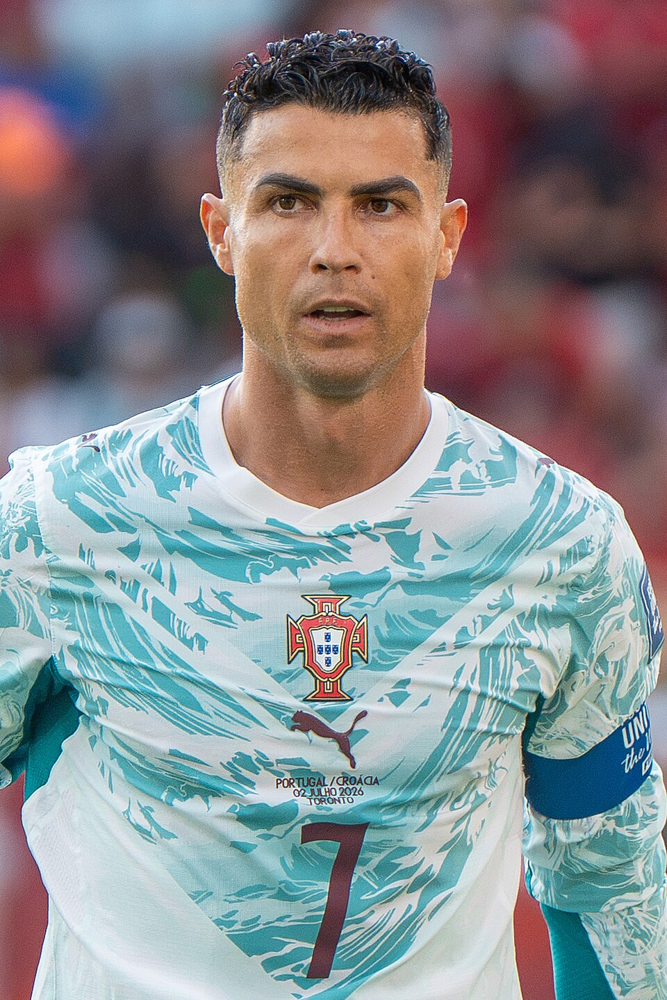

Quem é Cristiano Ronaldo?
Cristiano Ronaldo dos Santos Aveiro é um jogador de futebol português, nascido em 5 de fevereiro de 1985, na Ilha da Madeira, em Portugal. Ele é considerado um dos maiores jogadores da história do futebol e ficou conhecido não apenas pelos seus títulos e gols, mas também pela sua dedicação e vontade de melhorar constantemente.
Eu escolhi Cristiano Ronaldo porque ele me inspira pela sua dedicação, disciplina e determinação . Sua carreira mostra que ter talento é importante, mas também é necessário trabalhar muito para alcançar os seus objetivos. Ele começou com o sonho de ser jogador profissional e conseguiu chegar ao mais alto nível do futebol mundial.
Citações
“Eu acho que você sempre pode melhorar todos os aspectos do seu jogo.”
— Cristiano Ronaldo, em entrevista à UEFA, 2012.
“Para ser o capitão do meu país era um sonho desde o início.”
— Cristiano Ronaldo, em entrevista à UEFA, 2012.